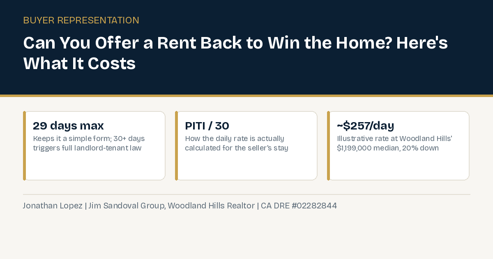

Can I Offer the Seller a Rent Back to Win a Woodland Hills Home, and What Does It Actually Cost?

A specific kind of Woodland Hills buyer runs into this question constantly: someone who is both buying their next home and selling their current one, and worried about the gap in between. What if the seller of the house you're buying needs a few extra weeks to move out after closing? Can you actually let them stay, and if so, what does that cost you as the buyer who now owns the house?
The answer is yes, this is a normal, well-established part of California real estate, called a rent-back agreement (sometimes called seller-in-possession). It is worth understanding the real mechanics, not just the concept, because offering one strategically can also make your own offer more attractive to a seller who needs exactly that flexibility.
The 30-Day Line That Actually Matters
California law draws a hard, practical line at 30 days. A rent back of 29 days or less uses a simple addendum, commonly called a Seller License to Remain in Possession or a Seller in Possession (SIP) form, depending on the exact paperwork your agent's brokerage uses. It keeps the arrangement straightforward: the seller stays a short, defined period, pays an agreed daily rate, and the whole thing wraps up before real complications set in.
Cross the 30-day mark and California law treats the arrangement as a genuine landlord-tenant lease, with all the disclosures, notice requirements, and tenant protections that come with that. This is exactly why the overwhelming majority of rent-backs in California are deliberately kept under 30 days. Most lenders also cap how long they will approve a rent-back for, generally up to around 59 days, but the 30-day legal threshold is the one that actually changes what kind of agreement you're signing.
How the Daily Rate Actually Gets Calculated
For a financed purchase, the daily rate a seller pays to stay is typically tied directly to the buyer's own carrying cost on the home: principal, interest, taxes, and insurance, commonly abbreviated PITI, divided by 30 to get a daily figure. This isn't market rent, it's meant to roughly cover what owning the home actually costs the buyer during that window, not to be a profit center.
Here's what that looks like in real numbers at Woodland Hills' current median. On a $1,199,000 purchase with 20% down and an illustrative 6.75% interest rate, the loan amount is $959,200. Monthly principal and interest on that loan runs approximately $6,221. Add a typical California property tax estimate (roughly 1.25% annually, which covers the Prop 13 base rate plus typical local additions) at about $1,249 a month, plus a rough homeowners insurance estimate of around $250 a month, and total monthly PITI lands around $7,720. Divide by 30, and the daily rate works out to roughly $257. A full 29-day rent back, the maximum before the 30-day threshold, would run approximately $7,460.
These numbers are an illustrative calculation using Woodland Hills' real current median price and standard, disclosed assumptions, not a specific real transaction. Your actual PITI depends on your real down payment, your real rate, and your real insurance quote.
What Else Should Be In the Agreement
Beyond the daily rate itself, two protections show up consistently in well-drafted rent-back agreements. A security deposit, typically held by the title or escrow company rather than either party directly, functions like a normal rental deposit and gives the buyer recourse if the home isn't left in the agreed condition. A required notice period before the seller actually moves out, commonly 7 to 10 days, protects the buyer from an unpredictable handoff date after closing. Neither of these is automatic, they need to actually be written into the agreement. This is a similar theme to how much earnest money actually protects a buyer and what happens if the appraisal comes in low, the paperwork details are what actually protect you, not assumptions.
Insurance During the Rent-Back Window
Once escrow closes, the buyer legally owns the home, even while the seller is still living in it under the rent-back agreement. That means the buyer's homeowners insurance policy, not the seller's old one, is generally what's on the hook if something happens to the property during that window. This is worth confirming directly with your insurance agent before closing, not assuming it's automatic. Some carriers want to know a rent-back is happening at all, since a seller occupying a home they no longer own is a slightly different risk profile than an owner-occupied policy assumes. It's a five-minute phone call that avoids a real coverage gap if something goes wrong during those two to four extra weeks.
Why a Buyer Would Offer This Strategically
This isn't only about accommodating a seller's timeline out of courtesy. In a competitive situation, a seller who is themselves worried about finding their next home, or timing two closings, may genuinely prefer an offer that includes flexibility to stay a few extra weeks over a higher offer that forces them out immediately. Offering a rent-back, even a short one, can be a real lever in how your offer gets evaluated, separate from price alone.
The Honest Caveat
A rent-back agreement adds real logistics and real risk on both sides: what happens if the seller doesn't move out on time, what happens if something gets damaged during the extra time in possession, and what insurance actually covers during that window all need to be addressed in the paperwork, not assumed. This is not something to handle with a verbal agreement or a vague clause. A properly drafted rent-back addendum, reviewed with your agent, is what actually protects both sides.
Bottom Line
A rent-back agreement is a real, commonly used tool in California real estate, not a favor with no structure. Understanding the real 30-day threshold, the real way the daily rate gets calculated, and the real protections worth including means you can decide, with real numbers in front of you, whether offering one makes sense for your specific offer.
Frequently Asked Questions
What is a rent-back agreement?
An arrangement where the seller of a home stays in the property for an agreed period after closing, paying the buyer (the new owner) a daily rate to do so, typically used when the seller needs extra time to move out or close on their own next home.
Why does the 30-day mark matter so much?
Under California law, a rent-back of 29 days or less uses a simple addendum. At 30 days or more, the arrangement legally becomes a landlord-tenant lease, triggering disclosures, notice requirements, and tenant protections. Most rent-backs are deliberately kept under 30 days specifically to avoid that complexity.
How is the daily rent-back rate calculated?
Usually as the buyer's own carrying cost on the home, principal, interest, taxes, and insurance (PITI), divided by 30. On Woodland Hills' current $1,199,000 median price with 20% down and an illustrative 6.75% rate, that works out to roughly $257 a day.
Do I need a security deposit for a rent-back?
It's strongly recommended, typically held by the title or escrow company rather than either party directly, giving the buyer recourse if the home isn't left in the agreed condition.
How much notice should I require before the seller moves out?
A well-drafted rent-back agreement typically requires 7 to 10 days written notice before the seller actually vacates, so the buyer isn't left with an unpredictable move-in date.
Can offering a rent-back actually help me win a competitive offer?
Yes, potentially. A seller juggling their own move or next purchase may value the flexibility of extra time in the home over a slightly higher offer with no such accommodation. It's a real lever separate from price.
Thinking about offering a rent-back to win your next Woodland Hills home?
Or call (818) 934-7576.